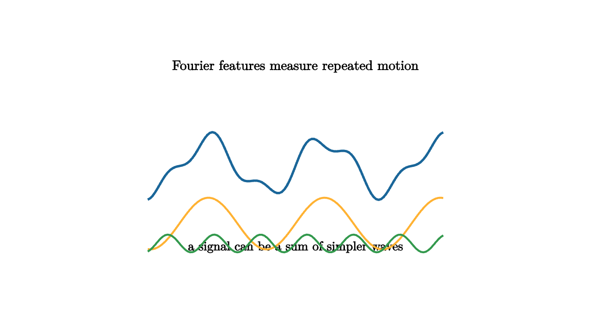

A temperature record looks messy day by day. Zoom out and it breathes with daily and yearly rhythms. A power signal vibrates at known frequencies, then picks up harmonics from machinery. A website receives traffic surges every weekday morning. Fourier analysis gives these repeated patterns coordinates.
The key idea is that sine and cosine waves form a basis for periodic signals. Instead of describing a signal by its value at each time, we can describe how much of each frequency it contains. For a finite sequence $x_0,\ldots,x_{n-1}$, the discrete Fourier transform computes
The coefficient $X_k$ measures the amount of frequency $k$ in the data.

source
let soft = |col, amount| lerp(WHITE, col, amount)
mesh waves = [
center{1.35u} Text("Fourier features measure repeated motion", 0.66),
stroke{BLUE, 3} ExplicitFunc(|x| 0.35 * sin(4 * x) + 0.12 * sin(10 * x), [-2.0, 2.0, 120]),
center{1.1d} Text("a signal can be a sum of simpler waves", 0.62),
stroke{ORANGE, 2.5} ExplicitFunc(|x| 0.35 * sin(4 * x) - 0.78, [-2.0, 2.0, 120]),
stroke{GREEN, 2.5} ExplicitFunc(|x| 0.12 * sin(10 * x) - 1.05, [-2.0, 2.0, 120])
]Fourier features are useful because many systems respond differently to different frequencies. A low-pass filter keeps slow variation and suppresses fast variation. A seasonal model may care strongly about one period and weakly about another. A compression method may keep large Fourier coefficients and discard tiny ones.
In data work, the frequency view answers a different kind of question. A time plot says when a pattern occurs. A spectrum says how often it repeats. Both are needed. A signal can have a hidden period that is hard to see in raw time but obvious when plotted by frequency.
source
let soft = |col, amount| lerp(WHITE, col, amount)
"Time View"
mesh scene = [
center{1.3u} Text("time view shows when values happen", 0.62),
stroke{LIGHT_GRAY, 1} Line(1.8l + 0.75d, 1.8r + 0.75d),
stroke{LIGHT_GRAY, 1} Line(1.8l + 0.75d, 1.8l + 0.85u),
stroke{BLUE, 3} ExplicitFunc(|x| 0.38 * sin(4 * x) + 0.18 * sin(9 * x), [-1.7, 1.7, 120])
]
play Write(0.9)
"Basis Waves"
scene = [
center{1.3u} Text("test the signal against clean waves", 0.62),
stroke{ORANGE, 3} ExplicitFunc(|x| 0.25 * sin(4 * x) + 0.35, [-1.7, 1.7, 120]),
stroke{GREEN, 3} ExplicitFunc(|x| 0.18 * sin(9 * x) - 0.35, [-1.7, 1.7, 120]),
center{1.12d} Tex("\\sin(\\omega t),\\; \\cos(\\omega t)", 0.66)
]
play Trans(0.9)
"Spectrum"
scene = [
center{1.3u} Text("frequency view shows what repeats", 0.62),
stroke{LIGHT_GRAY, 1} Line(1.55l + 0.8d, 1.55r + 0.8d),
fill{BLUE} center{0.9l + 0.35d} Rect([0.18, 0.9]),
fill{BLUE} center{0.15r + 0.05d} Rect([0.18, 0.55]),
fill{LIGHT_GRAY} center{0.65r + 0.65d} Rect([0.18, 0.14]),
fill{LIGHT_GRAY} center{1.1r + 0.68d} Rect([0.18, 0.08])
]
play Trans(0.8)Fourier features also appear in regression. If a signal repeats with period $T$, include features like
The model can then fit seasonal variation with ordinary linear coefficients. Adding higher harmonics lets the wave become sharper while still keeping a structured explanation.
There is a geometric view hiding here. Each frequency is a direction in a high-dimensional vector space of signals. Taking a Fourier transform projects the signal onto those directions. Large coefficients mean the signal has a large shadow on that wave.
The limitations are as important as the power. A sudden event spreads energy across many frequencies. Sampling too slowly can make a high frequency masquerade as a low one, a problem called aliasing. A signal whose frequency changes over time may need windowed Fourier analysis or wavelets.
Fourier analysis teaches a durable data-science habit: change coordinates to make the question visible. Raw time values can hide periodic structure. Frequency coordinates can reveal it. The signal has not changed. The questions have.